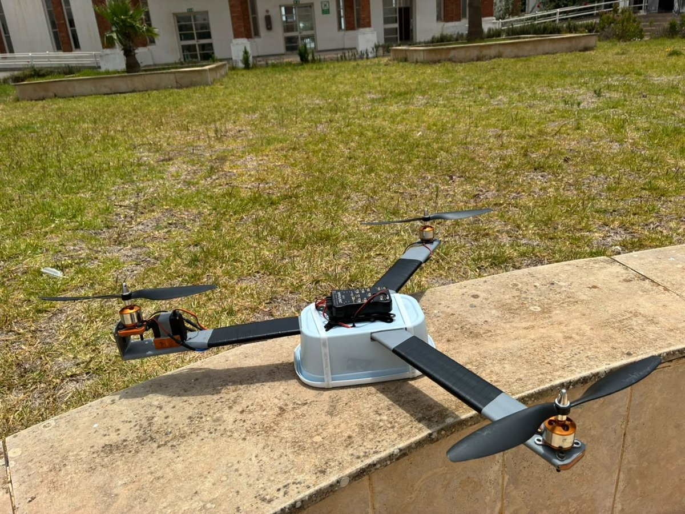
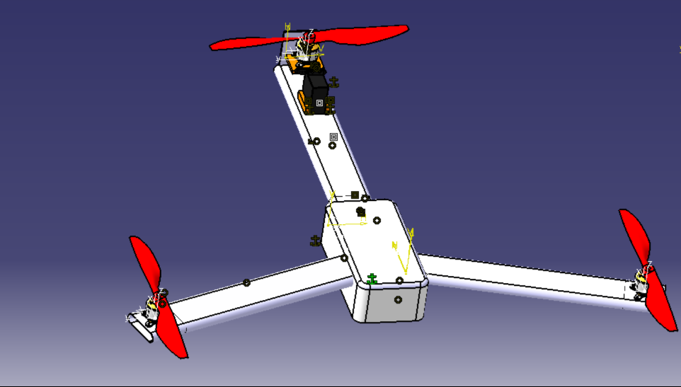
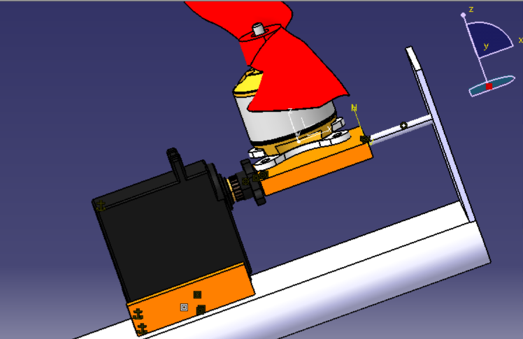
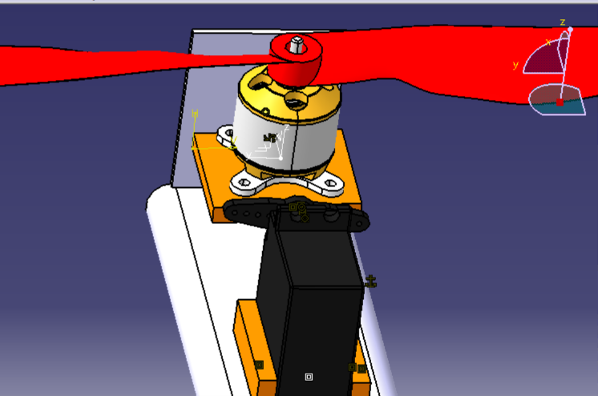
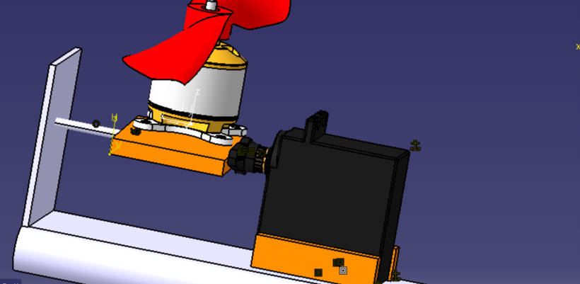

Drone tri-rotor avec système de pivot pour le contrôle du lacet

Objectif
Concevoir, fabriquer et faire voler un drone à trois moteurs. Un tri-rotor ne peut pas contrôler son lacet (la rotation sur lui-même) en jouant sur le sens de rotation des moteurs comme un quadrirotor. Il faut donc faire pivoter le moteur arrière pour créer une poussée latérale : c’est le rôle du système de pivot.
Conception
- Structure en Y avec trois bras à 120°, pour répartir les masses et les efforts autour du centre de gravité et laisser la place au mécanisme de pivot.
- Bras légèrement courbés pour éloigner les hélices du châssis et limiter les perturbations du flux d’air.
- Masses concentrées au centre : batterie, contrôleur de vol et distributeur de puissance près du centre de gravité.
- Pivot du moteur arrière : le moteur tourne autour d’un axe vertical sous l’action d’un servomoteur MG996R, avec un support rigide et compact, facile à régler et à remplacer.
- Modélisation de la structure sous CATIA V5.




Réalisation et programmation
- Fabrication des bras, découpe d’un châssis triangulaire, assemblage et contrôle de l’alignement.
- Installation et câblage : batterie LiPo 3S 2200 mAh, distributeur de puissance, trois contrôleurs de vitesse (ESC) de 30 A, trois moteurs brushless, servomoteur de pivot sur une sortie dédiée du Pixhawk.
- Configuration du contrôleur de vol Pixhawk 2.4.8 avec Mission Planner : firmware ArduCopter version Tricopter, calibration de l’accéléromètre, du compas, de la radiocommande FlySky et des ESC, réglage des modes de vol.
- Tests progressifs : moteurs (sens de rotation), pivot, communication avec la station sol, puis décollage.
Problèmes rencontrés et solutions
| Problème | Solution |
|---|---|
| Portance insuffisante : structure trop lourde, hélices trop proches du châssis | Allègement (bras et plaques en PVC) et éloignement des moteurs du centre |
| Instabilité : rotation involontaire au décollage, dérive latérale | Recalibrage des capteurs, fixation antivibratoire du Pixhawk, réglage itératif des gains PID |
| Châssis à un seul étage, masses mal réparties, accès difficile | Nouvelle conception à deux étages : batterie et distributeur en bas (centre de gravité abaissé), ESC, Pixhawk et récepteur au-dessus (moins d’interférences sur les capteurs) |
Résultats
- Les trois moteurs, le servomoteur de pivot et la communication avec Mission Planner fonctionnent.
- Le drone décolle et tient un vol stationnaire stable à basse altitude (environ 0,5 m, mode Stabilize), avec une bonne stabilité en roulis et en tangage.
- Le pivot du moteur arrière contrôle efficacement le lacet.
Limites et suite possible
Le prototype est artisanal et reste sensible aux vibrations et aux perturbations extérieures. Il n’a pas de navigation avancée. Les suites envisagées : navigation par GPS, télémétrie, optimisation des paramètres de commande et capteurs supplémentaires.